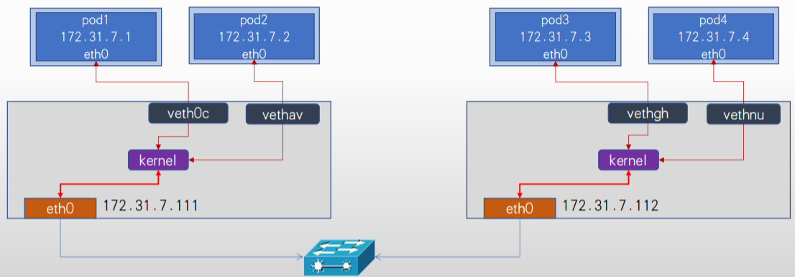
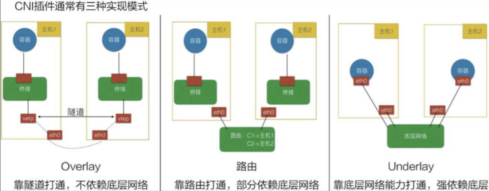
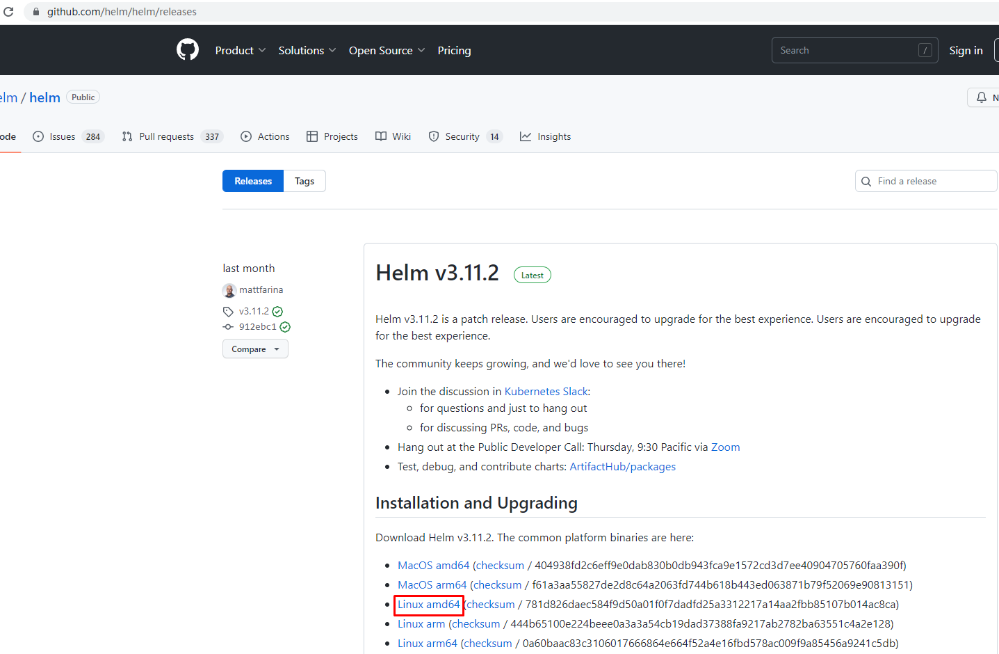
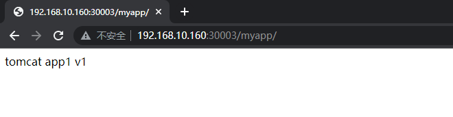
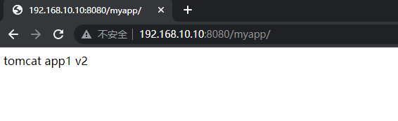
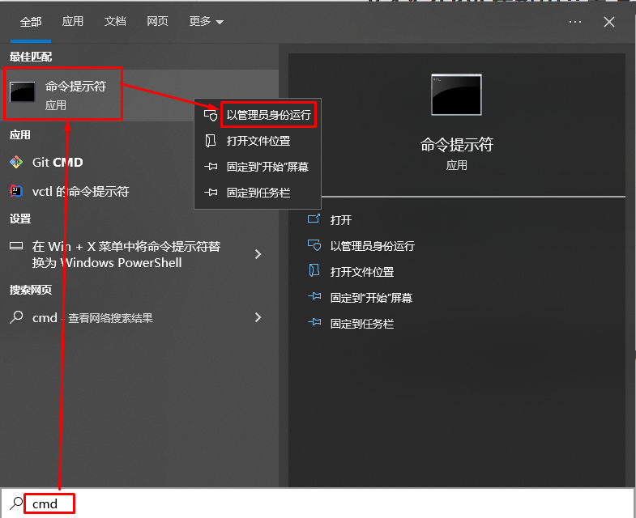
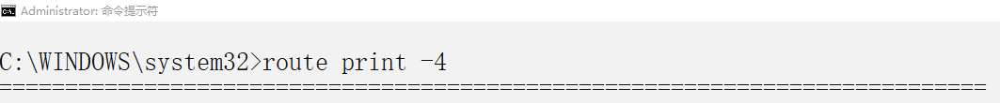
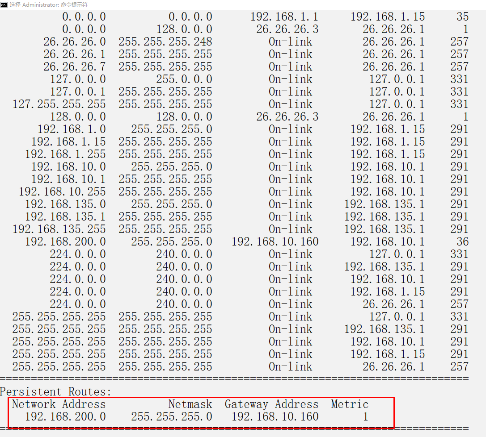
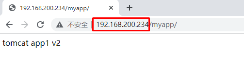

k8s集群 underlay 网络方案 hybridnet¶
零、容器网络方案介绍¶
0.1 overlay 网络方案¶
基于VXLAN、 NVGRE等封装技术实现overlay叠加网络：
1、叠加网络/覆盖网络， 在物理网络的基础之上叠加实现新的虚拟网络， 即可使网络的中的容器可以相互通信。
2、优点是对物理网络的兼容性比较好， 可以实现pod的夸宿主机子网通信。
3、calico与flannel等网络插件都支持overlay网络。
4、缺点是有额外的封装与解封性能开销。
5、目前私有云使用比较多。
0.2 underlay网络方案¶
Underlay网络就是传统IT基础设施网络， 由交换机和路由器等设备组成， 借助以太网协议、 路由协议和VLAN协议等驱动， 它还是Overlay网络的底层网络， 为Overlay网络提供数据通信服务。 容器网络中的Underlay网络是指借助驱动程序将宿主机的底层网络接口直接暴露给容器使用的一种网络构建技术，较为常见的解决方案有MAC VLAN、 IP VLAN和直接路由等。
Underlay依赖于物理网络进行跨主机通信。
1、Mac Vlan模式：
MAC VLAN： 支持在同一个以太网接口上虚拟出多个网络接口(子接口)， 每个虚拟接口都拥有唯一的MAC地址并可配置网卡子接口IP，基于Docker宿主机物理网卡的不同子接口实现多个虚拟vlan，一个子接口就是一个虚拟vlan，容器通过宿主机的路由功能和外网保持通信。
2、IP VLAN模式：
IP VLAN类似于MAC VLAN， 它同样创建新的虚拟网络接口并为每个接口分配唯一的IP地址， 不同之处在于， 每个虚拟接口将共享使用物理接口的MAC地址。

0.3 K8S Pod通信简介¶

- Overlay网络：
Flannel Vxlan、 Calico BGP、 Calico Vxlan 将pod 地址信息封装在宿主机地址信息以内， 实现跨主机且可跨node子网的通信报文。
- 直接路由：
Flannel Host-gw、 Flannel VXLAN Directrouting、 Calico Directrouting 基于主机路由， 实现报文从源主机到目的主机的直接转发， 不需要进行报文的叠加封装， 性能比overlay更好。
- Underlay:
不需要为pod启用单独的虚拟机网络， 而是直接使用宿主机物理网络， pod甚至可以在k8s环境之外的节点直接访问(与node节点的网络被打通)， 相当于把pod当桥接模式的虚拟机使用， 比较方便k8s环境以外的访问访问k8s环境中的pod中的服务， 而且由于主机使用的宿主机网络， 其性能最好。
一、K8S集群部署¶
基于kubeadm部署K8S 1.26集群，pod network cidr为10.244.0.0/16，service为默认10.96.0.0/12
方案1：
pod可以选择overlay或者underlay， SVC使用overlay， 如果是underlay需要配置SVC使用宿主机的子网比如以下场景是overlay网络、 后期会用于overlay场景的pod， service会用于overlay的svc场景。
kubeadm init --apiserver-advertise-address=192.168.10.160 \
--apiserver-bind-port=6443 \
--kubernetes-version=v1.26.3 \
--pod-network-cidr=10.244.0.0/16 \
--service-cidr=10.96.0.0/12 \
--service-dns-domain=cluster.local \
--image-repository=registry.cn-hangzhou.aliyuncs.com/google_containers \
--cri-socket unix:///var/run/cri-dockerd.sock
--image-repository=“”为空则使用默认的google容器镜像仓库
--cri-socket 可以使用unix:///var/run/containerd/containerd.sock或unix:///var/run/cri-dockerd.sock
方案2：
pod可以选择overlay或者underlay， SVC使用underlay初始化
--pod-network-cidr=10.244.0.0/16会用于后期overlay的场景， underlay的网络CIDR后期单独指定， overlay会与underlay并存
--service-cidr=192.168.200.0/24用于后期的underlay svc， 通过SVC可以直接访问pod。
kubeadm init --apiserver-advertise-address=192.168.10.160 \
--apiserver-bind-port=6443 \
--kubernetes-version=v1.26.3 \
--pod-network-cidr=10.244.0.0/16 \
--service-cidr=192.168.200.0/24 \
--service-dns-domain=cluster.local \
--image-repository=registry.cn-hangzhou.aliyuncs.com/google_containers \
--cri-socket unix:///var/run/cri-dockerd.sock
--service-cidr= 与已存在的网段不能冲突
--image-repository=“”为空则使用默认的google容器镜像仓库
--cri-socket 可以使用unix:///var/run/containerd/containerd.sock或unix:///var/run/cri-dockerd.sock
二、Helm部署¶

# wget https://get.helm.sh/helm-v3.11.2-linux-amd64.tar.gz
[root@k8s-master01 ~]# ls
helm-v3.11.2-linux-amd64.tar.gz
[root@k8s-master01 ~]# tar xf helm-v3.11.2-linux-amd64.tar.gz
[root@k8s-master01 ~]# ls
helm-v3.11.2-linux-amd64.tar.gz linux-amd64
[root@k8s-master01 ~]# ls linux-amd64/
helm LICENSE README.md
[root@k8s-master01 ~]# mv linux-amd64/helm /usr/local/bin/helm
[root@k8s-master01 ~]# helm version
version.BuildInfo{Version:"v3.11.2", GitCommit:"912ebc1cd10d38d340f048efaf0abda047c3468e", GitTreeState:"clean", GoVersion:"go1.18.10"}
三、部署hybridnet¶
[root@k8s-master01 ~]# helm repo add hybridnet https://alibaba.github.io/hybridnet/
"hybridnet" has been added to your repositories
[root@k8s-master01 ~]# helm repo list
NAME URL
hybridnet https://alibaba.github.io/hybridnet/
[root@k8s-master01 ~]# helm repo update
Hang tight while we grab the latest from your chart repositories...
...Successfully got an update from the "hybridnet" chart repository
Update Complete. ⎈Happy Helming!⎈
[root@k8s-master01 ~]# helm install hybridnet hybridnet/hybridnet -n kube-system --set init.cidr=10.244.0.0/16
输出：
W0404 12:14:47.796075 111159 warnings.go:70] spec.template.spec.nodeSelector[beta.kubernetes.io/os]: deprecated since v1.14; use "kubernetes.io/os" instead
W0404 12:14:47.796100 111159 warnings.go:70] spec.template.metadata.annotations[scheduler.alpha.kubernetes.io/critical-pod]: non-functional in v1.16+; use the "priorityClassName" field instead
NAME: hybridnet
LAST DEPLOYED: Tue Apr 4 12:14:47 2023
NAMESPACE: kube-system
STATUS: deployed
REVISION: 1
TEST SUITE: None
[root@k8s-master01 ~]# helm list -n kube-system
NAME NAMESPACE REVISION UPDATED STATUS CHART APP VERSION
hybridnet kube-system 1 2023-04-04 12:14:47.158751157 +0800 CST deployed hybridnet-0.6.0 0.8.0
[root@k8s-master01 ~]# kubectl get pods -n kube-system
NAME READY STATUS RESTARTS AGE
calico-typha-c856d6bfd-7qnkk 1/1 Running 0 107s
calico-typha-c856d6bfd-l8nhw 1/1 Running 0 107s
calico-typha-c856d6bfd-slppp 1/1 Running 0 109s
coredns-787d4945fb-lfk42 1/1 Running 0 15h
coredns-787d4945fb-t8x2t 1/1 Running 0 15h
etcd-k8s-master01 1/1 Running 0 15h
hybridnet-daemon-ls2rh 1/2 Running 1 (19s ago) 114s
hybridnet-daemon-lxcb6 1/2 Running 1 (70s ago) 114s
hybridnet-daemon-xp7t4 1/2 Running 1 (30s ago) 114s
hybridnet-manager-55f5488b46-2x5qw 0/1 Pending 0 114s
hybridnet-manager-55f5488b46-ddpjw 0/1 Pending 0 109s
hybridnet-manager-55f5488b46-tx78h 0/1 Pending 0 109s
hybridnet-webhook-55d848f89c-8zrs2 0/1 Pending 0 114s
hybridnet-webhook-55d848f89c-9f9rf 0/1 Pending 0 114s
hybridnet-webhook-55d848f89c-q9xgn 0/1 Pending 0 114s
kube-apiserver-k8s-master01 1/1 Running 0 15h
kube-controller-manager-k8s-master01 1/1 Running 0 15h
kube-proxy-5v642 1/1 Running 0 15h
kube-proxy-vnwhh 1/1 Running 0 15h
kube-proxy-zgrj6 1/1 Running 0 15h
kube-scheduler-k8s-master01 1/1 Running 0 15h
此时hybridnet-manager、hybridnet-webhook pod Pending，通过describe查看发现集群没有节点打上master标签
[root@k8s-master01 ~]# kubectl describe pods hybridnet-manager-55f5488b46-2x5qw -n kube-system
Name: hybridnet-manager-55f5488b46-2x5qw
Namespace: kube-system
Priority: 2000000000
Priority Class Name: system-cluster-critical
Service Account: hybridnet
Node: <none>
Labels: app=hybridnet
component=manager
pod-template-hash=55f5488b46
Annotations: <none>
Status: Pending
IP:
IPs: <none>
Controlled By: ReplicaSet/hybridnet-manager-55f5488b46
Containers:
hybridnet-manager:
Image: docker.io/hybridnetdev/hybridnet:v0.8.0
Port: 9899/TCP
Host Port: 9899/TCP
Command:
/hybridnet/hybridnet-manager
--default-ip-retain=true
--feature-gates=MultiCluster=false,VMIPRetain=false
--controller-concurrency=Pod=1,IPAM=1,IPInstance=1
--kube-client-qps=300
--kube-client-burst=600
--metrics-port=9899
Environment:
DEFAULT_NETWORK_TYPE: Overlay
DEFAULT_IP_FAMILY: IPv4
NAMESPACE: kube-system (v1:metadata.namespace)
Mounts:
/var/run/secrets/kubernetes.io/serviceaccount from kube-api-access-ctkkr (ro)
Conditions:
Type Status
PodScheduled False
Volumes:
kube-api-access-ctkkr:
Type: Projected (a volume that contains injected data from multiple sources)
TokenExpirationSeconds: 3607
ConfigMapName: kube-root-ca.crt
ConfigMapOptional: <nil>
DownwardAPI: true
QoS Class: BestEffort
Node-Selectors: node-role.kubernetes.io/master=
Tolerations: :NoSchedule op=Exists
node.kubernetes.io/not-ready:NoExecute op=Exists for 300s
node.kubernetes.io/unreachable:NoExecute op=Exists for 300s
Events:
Type Reason Age From Message
---- ------ ---- ---- -------
Warning FailedScheduling 3m32s (x2 over 3m34s) default-scheduler 0/3 nodes are available: 3 node(s) didn't match Pod's node affinity/selector. preemption: 0/3 nodes are available: 3 Preemption is not helpful for scheduling..
[root@k8s-master01 ~]# kubectl get node --show-labels
NAME STATUS ROLES AGE VERSION LABELS
k8s-master01 Ready control-plane 15h v1.26.3 beta.kubernetes.io/arch=amd64,beta.kubernetes.io/os=linux,kubernetes.io/arch=amd64,kubernetes.io/hostname=k8s-master01,kubernetes.io/os=linux,node-role.kubernetes.io/control-plane=,node.kubernetes.io/exclude-from-external-load-balancers=
k8s-worker01 Ready <none> 15h v1.26.3 beta.kubernetes.io/arch=amd64,beta.kubernetes.io/os=linux,kubernetes.io/arch=amd64,kubernetes.io/hostname=k8s-worker01,kubernetes.io/os=linux
k8s-worker02 Ready <none> 15h v1.26.3 beta.kubernetes.io/arch=amd64,beta.kubernetes.io/os=linux,kubernetes.io/arch=amd64,kubernetes.io/hostname=k8s-worker02,kubernetes.io/os=linux
[root@k8s-master01 ~]# kubectl label node k8s-master01 node-role.kubernetes.io/master=
node/k8s-master01 labeled
[root@k8s-master01 ~]# kubectl get nodes
NAME STATUS ROLES AGE VERSION
k8s-master01 Ready control-plane,master 15h v1.26.3
k8s-worker01 Ready <none> 15h v1.26.3
k8s-worker02 Ready <none> 15h v1.26.3
[root@k8s-master01 ~]# kubectl get node --show-labels
NAME STATUS ROLES AGE VERSION LABELS
k8s-master01 Ready control-plane,master 15h v1.26.3 beta.kubernetes.io/arch=amd64,beta.kubernetes.io/os=linux,kubernetes.io/arch=amd64,kubernetes.io/hostname=k8s-master01,kubernetes.io/os=linux,networking.alibaba.com/overlay-network-attachment=true,node-role.kubernetes.io/control-plane=,node-role.kubernetes.io/master=,node.kubernetes.io/exclude-from-external-load-balancers=
k8s-worker01 Ready <none> 15h v1.26.3 beta.kubernetes.io/arch=amd64,beta.kubernetes.io/os=linux,kubernetes.io/arch=amd64,kubernetes.io/hostname=k8s-worker01,kubernetes.io/os=linux,networking.alibaba.com/overlay-network-attachment=true
k8s-worker02 Ready <none> 15h v1.26.3 beta.kubernetes.io/arch=amd64,beta.kubernetes.io/os=linux,kubernetes.io/arch=amd64,kubernetes.io/hostname=k8s-worker02,kubernetes.io/os=linux,networking.alibaba.com/overlay-network-attachment=true
[root@k8s-master01 ~]# kubectl get pods -n kube-system -o wide
NAME READY STATUS RESTARTS AGE IP NODE NOMINATED NODE READINESS GATES
calico-typha-c856d6bfd-7qnkk 1/1 Running 0 9m17s 192.168.10.160 k8s-master01 <none> <none>
calico-typha-c856d6bfd-l8nhw 1/1 Running 0 9m17s 192.168.10.161 k8s-worker01 <none> <none>
calico-typha-c856d6bfd-slppp 1/1 Running 0 9m19s 192.168.10.162 k8s-worker02 <none> <none>
coredns-787d4945fb-lfk42 1/1 Running 0 15h 10.88.0.3 k8s-master01 <none> <none>
coredns-787d4945fb-t8x2t 1/1 Running 0 15h 10.88.0.2 k8s-master01 <none> <none>
etcd-k8s-master01 1/1 Running 0 15h 192.168.10.160 k8s-master01 <none> <none>
hybridnet-daemon-ls2rh 1/2 Running 1 (7m49s ago) 9m24s 192.168.10.161 k8s-worker01 <none> <none>
hybridnet-daemon-lxcb6 1/2 Running 1 (8m40s ago) 9m24s 192.168.10.162 k8s-worker02 <none> <none>
hybridnet-daemon-xp7t4 1/2 Running 1 (8m ago) 9m24s 192.168.10.160 k8s-master01 <none> <none>
hybridnet-manager-55f5488b46-2x5qw 1/1 Running 0 9m24s 192.168.10.160 k8s-master01 <none> <none>
hybridnet-manager-55f5488b46-ddpjw 0/1 Pending 0 9m19s <none> <none> <none> <none>
hybridnet-manager-55f5488b46-tx78h 0/1 Pending 0 9m19s <none> <none> <none> <none>
hybridnet-webhook-55d848f89c-8zrs2 0/1 Pending 0 9m24s <none> <none> <none> <none>
hybridnet-webhook-55d848f89c-9f9rf 1/1 Running 0 9m24s 192.168.10.160 k8s-master01 <none> <none>
hybridnet-webhook-55d848f89c-q9xgn 0/1 Pending 0 9m24s <none> <none> <none> <none>
kube-apiserver-k8s-master01 1/1 Running 0 15h 192.168.10.160 k8s-master01 <none> <none>
kube-controller-manager-k8s-master01 1/1 Running 0 15h 192.168.10.160 k8s-master01 <none> <none>
kube-proxy-5v642 1/1 Running 0 15h 192.168.10.160 k8s-master01 <none> <none>
kube-proxy-vnwhh 1/1 Running 0 15h 192.168.10.161 k8s-worker01 <none> <none>
kube-proxy-zgrj6 1/1 Running 0 15h 192.168.10.162 k8s-worker02 <none> <none>
kube-scheduler-k8s-master01 1/1 Running 0 15h 192.168.10.160 k8s-master01 <none> <none>
四、创建hybridnet网络¶
[root@k8s-master01 ~]# mkdir /root/hybridnet
[root@k8s-master01 ~]# cd hybridnet/
[root@k8s-master01 hybridnet]#
[root@k8s-master01 hybridnet]# kubectl label node k8s-master01 network=underlay-nethost
node/k8s-master01 labeled
[root@k8s-master01 hybridnet]# kubectl label node k8s-worker01 network=underlay-nethost
node/k8s-worker01 labeled
[root@k8s-master01 hybridnet]# kubectl label node k8s-worker02 network=underlay-nethost
node/k8s-worker02 labeled
[root@k8s-master01 hybridnet]# kubectl get node --show-labels
NAME STATUS ROLES AGE VERSION LABELS
k8s-master01 Ready control-plane,master 16h v1.26.3 beta.kubernetes.io/arch=amd64,beta.kubernetes.io/os=linux,kubernetes.io/arch=amd64,kubernetes.io/hostname=k8s-master01,kubernetes.io/os=linux,network=underlay-nethost,networking.alibaba.com/overlay-network-attachment=true,node-role.kubernetes.io/control-plane=,node-role.kubernetes.io/master=,node.kubernetes.io/exclude-from-external-load-balancers=
k8s-worker01 Ready <none> 15h v1.26.3 beta.kubernetes.io/arch=amd64,beta.kubernetes.io/os=linux,kubernetes.io/arch=amd64,kubernetes.io/hostname=k8s-worker01,kubernetes.io/os=linux,network=underlay-nethost,networking.alibaba.com/overlay-network-attachment=true
k8s-worker02 Ready <none> 15h v1.26.3 beta.kubernetes.io/arch=amd64,beta.kubernetes.io/os=linux,kubernetes.io/arch=amd64,kubernetes.io/hostname=k8s-worker02,kubernetes.io/os=linux,network=underlay-nethost,networking.alibaba.com/overlay-network-attachment=true
[root@k8s-master01 hybridnet]# vim 01-create-underlay-network.yaml
[root@k8s-master01 hybridnet]# cat 01-create-underlay-network.yaml
---
apiVersion: networking.alibaba.com/v1
kind: Network
metadata:
name: underlay-network1
spec:
netID: 0
type: Underlay
nodeSelector:
network: "underlay-nethost"
---
apiVersion: networking.alibaba.com/v1
kind: Subnet
metadata:
name: underlay-network1
spec:
network: underlay-network1
netID: 0
range:
version: "4"
cidr: "192.168.10.0/24"
gateway: "192.168.10.2"
start: "192.168.10.10"
end: "192.168.10.20"
[root@k8s-master01 hybridnet]# kubectl create -f 01-create-underlay-network.yaml
[root@k8s-master01 hybridnet]# kubectl get network
NAME NETID TYPE MODE V4TOTAL V4USED V4AVAILABLE LASTALLOCATEDV4SUBNET V6TOTAL V6USED V6AVAILABLE LASTALLOCATEDV6SUBNET
init 4 Overlay 65534 2 65532 init 0 0 0
underlay-network1 0 Underlay 11 0 11 underlay-network1 0 0 0
[root@k8s-master01 hybridnet]# kubectl get subnet
NAME VERSION CIDR START END GATEWAY TOTAL USED AVAILABLE NETID NETWORK
init 4 10.244.0.0/16 65534 2 65532 init
underlay-network1 4 192.168.10.0/24 192.168.10.10 192.168.10.20 192.168.10.2 11 11 0 underlay-network1
五、查看节点Labels信息¶
[root@k8s-master01 hybridnet]# kubectl get nodes --show-labels
NAME STATUS ROLES AGE VERSION LABELS
k8s-master01 Ready control-plane,master 16h v1.26.3 beta.kubernetes.io/arch=amd64,beta.kubernetes.io/os=linux,kubernetes.io/arch=amd64,kubernetes.io/hostname=k8s-master01,kubernetes.io/os=linux,network=underlay-nethost,networking.alibaba.com/dualstack-address-quota=empty,networking.alibaba.com/ipv4-address-quota=nonempty,networking.alibaba.com/ipv6-address-quota=empty,networking.alibaba.com/overlay-network-attachment=true,networking.alibaba.com/underlay-network-attachment=true,node-role.kubernetes.io/control-plane=,node-role.kubernetes.io/master=,node.kubernetes.io/exclude-from-external-load-balancers=
k8s-worker01 Ready <none> 16h v1.26.3 beta.kubernetes.io/arch=amd64,beta.kubernetes.io/os=linux,kubernetes.io/arch=amd64,kubernetes.io/hostname=k8s-worker01,kubernetes.io/os=linux,network=underlay-nethost,networking.alibaba.com/dualstack-address-quota=empty,networking.alibaba.com/ipv4-address-quota=nonempty,networking.alibaba.com/ipv6-address-quota=empty,networking.alibaba.com/overlay-network-attachment=true,networking.alibaba.com/underlay-network-attachment=true
k8s-worker02 Ready <none> 16h v1.26.3 beta.kubernetes.io/arch=amd64,beta.kubernetes.io/os=linux,kubernetes.io/arch=amd64,kubernetes.io/hostname=k8s-worker02,kubernetes.io/os=linux,network=underlay-nethost,networking.alibaba.com/dualstack-address-quota=empty,networking.alibaba.com/ipv4-address-quota=nonempty,networking.alibaba.com/ipv6-address-quota=empty,networking.alibaba.com/overlay-network-attachment=true,networking.alibaba.com/underlay-network-attachment=true
[root@k8s-master01 hybridnet]# kubectl describe nodes k8s-master01
Name: k8s-master01
Roles: control-plane,master
Labels: beta.kubernetes.io/arch=amd64
beta.kubernetes.io/os=linux
kubernetes.io/arch=amd64
kubernetes.io/hostname=k8s-master01
kubernetes.io/os=linux
network=underlay-nethost
networking.alibaba.com/dualstack-address-quota=empty
networking.alibaba.com/ipv4-address-quota=nonempty
networking.alibaba.com/ipv6-address-quota=empty
networking.alibaba.com/overlay-network-attachment=true
networking.alibaba.com/underlay-network-attachment=true
node-role.kubernetes.io/control-plane=
node-role.kubernetes.io/master=
node.kubernetes.io/exclude-from-external-load-balancers=
Annotations: kubeadm.alpha.kubernetes.io/cri-socket: unix:///var/run/containerd/containerd.sock
node.alpha.kubernetes.io/ttl: 0
projectcalico.org/IPv4Address: 192.168.10.160/24
projectcalico.org/IPv4VXLANTunnelAddr: 10.244.32.128
volumes.kubernetes.io/controller-managed-attach-detach: true
CreationTimestamp: Mon, 03 Apr 2023 20:26:44 +0800
Taints: node-role.kubernetes.io/control-plane:NoSchedule
Unschedulable: false
Lease:
HolderIdentity: k8s-master01
AcquireTime: <unset>
RenewTime: Tue, 04 Apr 2023 12:35:31 +0800
Conditions:
Type Status LastHeartbeatTime LastTransitionTime Reason Message
---- ------ ----------------- ------------------ ------ -------
NetworkUnavailable False Tue, 04 Apr 2023 11:59:24 +0800 Tue, 04 Apr 2023 11:59:24 +0800 CalicoIsUp Calico is running on this node
MemoryPressure False Tue, 04 Apr 2023 12:31:18 +0800 Mon, 03 Apr 2023 20:26:39 +0800 KubeletHasSufficientMemory kubelet has sufficient memory available
DiskPressure False Tue, 04 Apr 2023 12:31:18 +0800 Mon, 03 Apr 2023 20:26:39 +0800 KubeletHasNoDiskPressure kubelet has no disk pressure
PIDPressure False Tue, 04 Apr 2023 12:31:18 +0800 Mon, 03 Apr 2023 20:26:39 +0800 KubeletHasSufficientPID kubelet has sufficient PID available
Ready True Tue, 04 Apr 2023 12:31:18 +0800 Mon, 03 Apr 2023 20:26:47 +0800 KubeletReady kubelet is posting ready status
Addresses:
InternalIP: 192.168.10.160
Hostname: k8s-master01
Capacity:
cpu: 4
ephemeral-storage: 51175Mi
hugepages-1Gi: 0
hugepages-2Mi: 0
memory: 4026120Ki
pods: 110
Allocatable:
cpu: 4
ephemeral-storage: 48294789041
hugepages-1Gi: 0
hugepages-2Mi: 0
memory: 3923720Ki
pods: 110
System Info:
Machine ID: f618107e5de3464bbfc77620a718fdd5
System UUID: B55A4D56-8EBB-7F7D-F774-2CAFA717C713
Boot ID: 289d296b-02fd-4135-a427-81143def0ed9
Kernel Version: 3.10.0-1160.76.1.el7.x86_64
OS Image: CentOS Linux 7 (Core)
Operating System: linux
Architecture: amd64
Container Runtime Version: containerd://1.7.0
Kubelet Version: v1.26.3
Kube-Proxy Version: v1.26.3
PodCIDR: 10.244.0.0/24
PodCIDRs: 10.244.0.0/24
Non-terminated Pods: (11 in total)
Namespace Name CPU Requests CPU Limits Memory Requests Memory Limits Age
--------- ---- ------------ ---------- --------------- ------------- ---
kube-system calico-typha-c856d6bfd-7qnkk 0 (0%) 0 (0%) 0 (0%) 0 (0%) 20m
kube-system coredns-787d4945fb-lfk42 100m (2%) 0 (0%) 70Mi (1%) 170Mi (4%) 16h
kube-system coredns-787d4945fb-t8x2t 100m (2%) 0 (0%) 70Mi (1%) 170Mi (4%) 16h
kube-system etcd-k8s-master01 100m (2%) 0 (0%) 100Mi (2%) 0 (0%) 16h
kube-system hybridnet-daemon-xp7t4 0 (0%) 0 (0%) 0 (0%) 0 (0%) 20m
kube-system hybridnet-manager-55f5488b46-2x5qw 0 (0%) 0 (0%) 0 (0%) 0 (0%) 20m
kube-system hybridnet-webhook-55d848f89c-9f9rf 0 (0%) 0 (0%) 0 (0%) 0 (0%) 20m
kube-system kube-apiserver-k8s-master01 250m (6%) 0 (0%) 0 (0%) 0 (0%) 16h
kube-system kube-controller-manager-k8s-master01 200m (5%) 0 (0%) 0 (0%) 0 (0%) 16h
kube-system kube-proxy-5v642 0 (0%) 0 (0%) 0 (0%) 0 (0%) 16h
kube-system kube-scheduler-k8s-master01 100m (2%) 0 (0%) 0 (0%) 0 (0%) 16h
Allocated resources:
(Total limits may be over 100 percent, i.e., overcommitted.)
Resource Requests Limits
-------- -------- ------
cpu 850m (21%) 0 (0%)
memory 240Mi (6%) 340Mi (8%)
ephemeral-storage 0 (0%) 0 (0%)
hugepages-1Gi 0 (0%) 0 (0%)
hugepages-2Mi 0 (0%) 0 (0%)
Events: <none>
[root@k8s-master01 hybridnet]# kubectl describe nodes k8s-worker01
Name: k8s-worker01
Roles: <none>
Labels: beta.kubernetes.io/arch=amd64
beta.kubernetes.io/os=linux
kubernetes.io/arch=amd64
kubernetes.io/hostname=k8s-worker01
kubernetes.io/os=linux
network=underlay-nethost
networking.alibaba.com/dualstack-address-quota=empty
networking.alibaba.com/ipv4-address-quota=nonempty
networking.alibaba.com/ipv6-address-quota=empty
networking.alibaba.com/overlay-network-attachment=true
networking.alibaba.com/underlay-network-attachment=true
Annotations: kubeadm.alpha.kubernetes.io/cri-socket: unix:///var/run/containerd/containerd.sock
node.alpha.kubernetes.io/ttl: 0
projectcalico.org/IPv4Address: 192.168.10.161/24
projectcalico.org/IPv4VXLANTunnelAddr: 10.244.79.64
volumes.kubernetes.io/controller-managed-attach-detach: true
CreationTimestamp: Mon, 03 Apr 2023 20:28:44 +0800
Taints: <none>
Unschedulable: false
Lease:
HolderIdentity: k8s-worker01
AcquireTime: <unset>
RenewTime: Tue, 04 Apr 2023 12:39:22 +0800
Conditions:
Type Status LastHeartbeatTime LastTransitionTime Reason Message
---- ------ ----------------- ------------------ ------ -------
NetworkUnavailable False Tue, 04 Apr 2023 11:59:42 +0800 Tue, 04 Apr 2023 11:59:42 +0800 CalicoIsUp Calico is running on this node
MemoryPressure False Tue, 04 Apr 2023 12:36:30 +0800 Mon, 03 Apr 2023 20:28:43 +0800 KubeletHasSufficientMemory kubelet has sufficient memory available
DiskPressure False Tue, 04 Apr 2023 12:36:30 +0800 Mon, 03 Apr 2023 20:28:43 +0800 KubeletHasNoDiskPressure kubelet has no disk pressure
PIDPressure False Tue, 04 Apr 2023 12:36:30 +0800 Mon, 03 Apr 2023 20:28:43 +0800 KubeletHasSufficientPID kubelet has sufficient PID available
Ready True Tue, 04 Apr 2023 12:36:30 +0800 Mon, 03 Apr 2023 20:28:47 +0800 KubeletReady kubelet is posting ready status
Addresses:
InternalIP: 192.168.10.161
Hostname: k8s-worker01
Capacity:
cpu: 4
ephemeral-storage: 51175Mi
hugepages-1Gi: 0
hugepages-2Mi: 0
memory: 4026128Ki
pods: 110
Allocatable:
cpu: 4
ephemeral-storage: 48294789041
hugepages-1Gi: 0
hugepages-2Mi: 0
memory: 3923728Ki
pods: 110
System Info:
Machine ID: f618107e5de3464bbfc77620a718fdd5
System UUID: 7DD24D56-096D-7853-6E3E-0ED5FAB35AC3
Boot ID: 8f8f964d-a639-4a11-972d-043dca2f718e
Kernel Version: 3.10.0-1160.76.1.el7.x86_64
OS Image: CentOS Linux 7 (Core)
Operating System: linux
Architecture: amd64
Container Runtime Version: containerd://1.7.0
Kubelet Version: v1.26.3
Kube-Proxy Version: v1.26.3
PodCIDR: 10.244.2.0/24
PodCIDRs: 10.244.2.0/24
Non-terminated Pods: (3 in total)
Namespace Name CPU Requests CPU Limits Memory Requests Memory Limits Age
--------- ---- ------------ ---------- --------------- ------------- ---
kube-system calico-typha-c856d6bfd-l8nhw 0 (0%) 0 (0%) 0 (0%) 0 (0%) 24m
kube-system hybridnet-daemon-ls2rh 0 (0%) 0 (0%) 0 (0%) 0 (0%) 24m
kube-system kube-proxy-vnwhh 0 (0%) 0 (0%) 0 (0%) 0 (0%) 16h
Allocated resources:
(Total limits may be over 100 percent, i.e., overcommitted.)
Resource Requests Limits
-------- -------- ------
cpu 0 (0%) 0 (0%)
memory 0 (0%) 0 (0%)
ephemeral-storage 0 (0%) 0 (0%)
hugepages-1Gi 0 (0%) 0 (0%)
hugepages-2Mi 0 (0%) 0 (0%)
Events: <none>
[root@k8s-master01 hybridnet]# kubectl describe nodes k8s-worker02
Name: k8s-worker02
Roles: <none>
Labels: beta.kubernetes.io/arch=amd64
beta.kubernetes.io/os=linux
kubernetes.io/arch=amd64
kubernetes.io/hostname=k8s-worker02
kubernetes.io/os=linux
network=underlay-nethost
networking.alibaba.com/dualstack-address-quota=empty
networking.alibaba.com/ipv4-address-quota=nonempty
networking.alibaba.com/ipv6-address-quota=empty
networking.alibaba.com/overlay-network-attachment=true
networking.alibaba.com/underlay-network-attachment=true
Annotations: kubeadm.alpha.kubernetes.io/cri-socket: unix:///var/run/containerd/containerd.sock
node.alpha.kubernetes.io/ttl: 0
projectcalico.org/IPv4Address: 192.168.10.162/24
projectcalico.org/IPv4VXLANTunnelAddr: 10.244.69.192
volumes.kubernetes.io/controller-managed-attach-detach: true
CreationTimestamp: Mon, 03 Apr 2023 20:28:39 +0800
Taints: <none>
Unschedulable: false
Lease:
HolderIdentity: k8s-worker02
AcquireTime: <unset>
RenewTime: Tue, 04 Apr 2023 12:39:49 +0800
Conditions:
Type Status LastHeartbeatTime LastTransitionTime Reason Message
---- ------ ----------------- ------------------ ------ -------
NetworkUnavailable False Tue, 04 Apr 2023 12:00:08 +0800 Tue, 04 Apr 2023 12:00:08 +0800 CalicoIsUp Calico is running on this node
MemoryPressure False Tue, 04 Apr 2023 12:36:02 +0800 Mon, 03 Apr 2023 20:28:39 +0800 KubeletHasSufficientMemory kubelet has sufficient memory available
DiskPressure False Tue, 04 Apr 2023 12:36:02 +0800 Mon, 03 Apr 2023 20:28:39 +0800 KubeletHasNoDiskPressure kubelet has no disk pressure
PIDPressure False Tue, 04 Apr 2023 12:36:02 +0800 Mon, 03 Apr 2023 20:28:39 +0800 KubeletHasSufficientPID kubelet has sufficient PID available
Ready True Tue, 04 Apr 2023 12:36:02 +0800 Mon, 03 Apr 2023 20:28:46 +0800 KubeletReady kubelet is posting ready status
Addresses:
InternalIP: 192.168.10.162
Hostname: k8s-worker02
Capacity:
cpu: 4
ephemeral-storage: 51175Mi
hugepages-1Gi: 0
hugepages-2Mi: 0
memory: 4026120Ki
pods: 110
Allocatable:
cpu: 4
ephemeral-storage: 48294789041
hugepages-1Gi: 0
hugepages-2Mi: 0
memory: 3923720Ki
pods: 110
System Info:
Machine ID: f618107e5de3464bbfc77620a718fdd5
System UUID: 43224D56-1D27-9147-1CC6-B7FDBED96000
Boot ID: 86cbf2e5-324d-4457-8585-f599ddc38c7c
Kernel Version: 3.10.0-1160.76.1.el7.x86_64
OS Image: CentOS Linux 7 (Core)
Operating System: linux
Architecture: amd64
Container Runtime Version: containerd://1.7.0
Kubelet Version: v1.26.3
Kube-Proxy Version: v1.26.3
PodCIDR: 10.244.1.0/24
PodCIDRs: 10.244.1.0/24
Non-terminated Pods: (3 in total)
Namespace Name CPU Requests CPU Limits Memory Requests Memory Limits Age
--------- ---- ------------ ---------- --------------- ------------- ---
kube-system calico-typha-c856d6bfd-slppp 0 (0%) 0 (0%) 0 (0%) 0 (0%) 24m
kube-system hybridnet-daemon-lxcb6 0 (0%) 0 (0%) 0 (0%) 0 (0%) 25m
kube-system kube-proxy-zgrj6 0 (0%) 0 (0%) 0 (0%) 0 (0%) 16h
Allocated resources:
(Total limits may be over 100 percent, i.e., overcommitted.)
Resource Requests Limits
-------- -------- ------
cpu 0 (0%) 0 (0%)
memory 0 (0%) 0 (0%)
ephemeral-storage 0 (0%) 0 (0%)
hugepages-1Gi 0 (0%) 0 (0%)
hugepages-2Mi 0 (0%) 0 (0%)
Events: <none>
六、创建pod使用overlay网络¶
[root@k8s-master01 hybridnet]# vim 02-tomcat-app1-overlay.yaml
[root@k8s-master01 hybridnet]# cat 02-tomcat-app1-overlay.yaml
kind: Deployment
apiVersion: apps/v1
metadata:
labels:
app: myserver-tomcat-app1-deployment-overlay-label
name: myserver-tomcat-app1-deployment-overlay
namespace: myserver
spec:
replicas: 1
selector:
matchLabels:
app: myserver-tomcat-app1-overlay-selector
template:
metadata:
labels:
app: myserver-tomcat-app1-overlay-selector
spec:
containers:
- name: myserver-tomcat-app1-container
image: registry.cn-hangzhou.aliyuncs.com/zhangshijie/tomcat-app1:v1
imagePullPolicy: IfNotPresent
ports:
- containerPort: 8080
protocol: TCP
name: http
env:
- name: "password"
value: "123456"
- name: "age"
value: "18"
---
kind: Service
apiVersion: v1
metadata:
labels:
app: myserver-tomcat-app1-service-overlay-label
name: myserver-tomcat-app1-service-overlay
namespace: myserver
spec:
type: NodePort
ports:
- name: http
port: 80
protocol: TCP
targetPort: 8080
nodePort: 30003
selector:
app: myserver-tomcat-app1-overlay-selector
[root@k8s-master01 hybridnet]# kubectl create ns myserver
namespace/myserver created
[root@k8s-master01 hybridnet]# kubectl create -f 02-tomcat-app1-overlay.yaml
deployment.apps/myserver-tomcat-app1-deployment-overlay created
service/myserver-tomcat-app1-service-overlay created
[root@k8s-master01 hybridnet]# kubectl get pods -n myserver -o wide
NAME READY STATUS RESTARTS AGE IP NODE NOMINATED NODE READINESS GATES
myserver-tomcat-app1-deployment-overlay-5bb44b6bf6-lnp68 1/1 Running 0 2m1s 10.244.0.17 k8s-worker02 <none> <none>
[root@k8s-master01 hybridnet]# kubectl get svc -n myserver
NAME TYPE CLUSTER-IP EXTERNAL-IP PORT(S) AGE
myserver-tomcat-app1-service-overlay NodePort 10.111.170.113 <none> 80:30003/TCP 40s

七、创建pod并使用underlay网络¶
[root@k8s-master01 hybridnet]# vim 03-tomcat-app1-underlay.yaml
[root@k8s-master01 hybridnet]# cat 03-tomcat-app1-underlay.yaml
kind: Deployment
apiVersion: apps/v1
metadata:
labels:
app: myserver-tomcat-app1-deployment-underlay-label
name: myserver-tomcat-app1-deployment-underlay
namespace: myserver
spec:
replicas: 1
selector:
matchLabels:
app: myserver-tomcat-app1-underlay-selector
template:
metadata:
labels:
app: myserver-tomcat-app1-underlay-selector
annotations:
networking.alibaba.com/network-type: Underlay
spec:
containers:
- name: myserver-tomcat-app1-container
image: registry.cn-hangzhou.aliyuncs.com/zhangshijie/tomcat-app1:v2
imagePullPolicy: IfNotPresent
ports:
- containerPort: 8080
protocol: TCP
name: http
env:
- name: "password"
value: "123456"
- name: "age"
value: "18"
---
kind: Service
apiVersion: v1
metadata:
labels:
app: myserver-tomcat-app1-service-underlay-label
name: myserver-tomcat-app1-service-underlay
namespace: myserver
spec:
ports:
- name: http
port: 80
protocol: TCP
targetPort: 8080
selector:
app: myserver-tomcat-app1-underlay-selector
[root@k8s-master01 hybridnet]# kubectl create -f 03-tomcat-app1-underlay.yaml
deployment.apps/myserver-tomcat-app1-deployment-underlay created
service/myserver-tomcat-app1-service-underlay created
[root@k8s-master01 hybridnet]# kubectl get pods -n myserver -o wide
NAME READY STATUS RESTARTS AGE IP NODE NOMINATED NODE READINESS GATES
myserver-tomcat-app1-deployment-overlay-5bb44b6bf6-lnp68 1/1 Running 0 5m13s 10.244.0.17 k8s-worker02 <none> <none>
myserver-tomcat-app1-deployment-underlay-7f65f45449-mvkj7 1/1 Running 0 10m 192.168.10.10 k8s-worker01 <none> <none>
[root@k8s-master01 hybridnet]# kubectl get svc -n myserver
NAME TYPE CLUSTER-IP EXTERNAL-IP PORT(S) AGE
myserver-tomcat-app1-service-overlay NodePort 10.111.170.113 <none> 80:30003/TCP 5m56s
myserver-tomcat-app1-service-underlay ClusterIP 10.99.144.184 <none> 80/TCP 100s

[root@k8s-master01 hybridnet]# curl http://192.168.10.10:8080/myapp/
tomcat app1 v2
八、创建service并使用underlay网络¶
8.1 K8S集群初始化注意事项¶
初始化完成后，把所有worker节点加入
kubeadm init --apiserver-advertise-address=192.168.10.160 \
--apiserver-bind-port=6443 \
--kubernetes-version=v1.26.3 \
--pod-network-cidr=10.244.0.0/16 \
--service-cidr=192.168.200.0/24 \
--service-dns-domain=cluster.local \
--cri-socket unix:///var/run/containerd/containerd.sock
--service-cidr=192.168.200.0/24 此位置指定的网段不能与本地已有网络冲突
[root@k8s-master01 ~]# kubectl get svc
NAME TYPE CLUSTER-IP EXTERNAL-IP PORT(S) AGE
kubernetes ClusterIP 192.168.200.1 <none> 443/TCP 82m
[root@k8s-master01 ~]# kubectl get svc -n kube-system
NAME TYPE CLUSTER-IP EXTERNAL-IP PORT(S) AGE
calico-typha ClusterIP 192.168.200.249 <none> 5473/TCP 79m
hybridnet-webhook ClusterIP 192.168.200.149 <none> 443/TCP 79m
kube-dns ClusterIP 192.168.200.10 <none> 53/UDP,53/TCP,9153/TCP 83m
k8s集群初始化成功后，必须先安装helm，再通过helm部署hybridnet后创建underlay网络。
8.2 创建underlay网络¶
[root@k8s-master01 ~]# mkdir /root/hybridnet
[root@k8s-master01 ~]# cd hybridnet/
[root@k8s-master01 hybridnet]#
[root@k8s-master01 hybridnet]# kubectl label node k8s-master01 network=underlay-nethost
node/k8s-master01 labeled
[root@k8s-master01 hybridnet]# kubectl label node k8s-worker01 network=underlay-nethost
node/k8s-worker01 labeled
[root@k8s-master01 hybridnet]# kubectl label node k8s-worker02 network=underlay-nethost
node/k8s-worker02 labeled
[root@k8s-master01 hybridnet]# vim 01-underlay-network.yaml
[root@k8s-master01 hybridnet]# cat 01-underlay-network.yaml
---
apiVersion: networking.alibaba.com/v1
kind: Network
metadata:
name: underlay-network1
spec:
netID: 0
type: Underlay
nodeSelector:
network: "underlay-nethost"
---
apiVersion: networking.alibaba.com/v1
kind: Subnet
metadata:
name: underlay-network1
spec:
network: underlay-network1
netID: 0
range:
version: "4"
cidr: "192.168.200.0/24"
gateway: "192.168.200.254"
start: "192.168.200.50"
end: "192.168.200.200"
[root@k8s-master01 hybridnet]# kubectl create -f 01-underlay-network.yaml
[root@k8s-master01 hybridnet]# kubectl get network
NAME NETID TYPE MODE V4TOTAL V4USED V4AVAILABLE LASTALLOCATEDV4SUBNET V6TOTAL V6USED V6AVAILABLE LASTALLOCATEDV6SUBNET
init 4 Overlay 65534 3 65531 init 0 0 0
underlay-network1 0 Underlay 151 0 151 underlay-network1 0 0 0
[root@k8s-master01 hybridnet]# kubectl get subnet
NAME VERSION CIDR START END GATEWAY TOTAL USED AVAILABLE NETID NETWORK
init 4 10.244.0.0/16 65534 3 65531 init
underlay-network1 4 192.168.200.0/24 192.168.200.50 192.168.200.200 192.168.200.254 151 151 0 underlay-network1
8.3 创建service使用underlay网络¶
[root@k8s-master01 hybridnet]# vim 02-service-underlay.yaml
[root@k8s-master01 hybridnet]# cat 02-service-underlay.yaml
kind: Deployment
apiVersion: apps/v1
metadata:
labels:
app: myserver-tomcat-app1-deployment-underlay-label
name: myserver-tomcat-app1-deployment-underlay
namespace: myserver
spec:
replicas: 1
selector:
matchLabels:
app: myserver-tomcat-app1-underlay-selector
template:
metadata:
labels:
app: myserver-tomcat-app1-underlay-selector
spec:
containers:
- name: myserver-tomcat-app1-container
image: registry.cn-hangzhou.aliyuncs.com/zhangshijie/tomcat-app1:v2
imagePullPolicy: IfNotPresent
ports:
- containerPort: 8080
protocol: TCP
name: http
env:
- name: "password"
value: "123456"
- name: "age"
value: "18"
---
kind: Service
apiVersion: v1
metadata:
labels:
app: myserver-tomcat-app1-service-underlay-label
name: myserver-tomcat-app1-service-underlay
namespace: myserver
annotations:
networking.alibaba.com/network-type: Underlay 重点注意这里
spec:
ports:
- name: http
port: 80
protocol: TCP
targetPort: 8080
selector:
app: myserver-tomcat-app1-underlay-selector
[root@k8s-master01 hybridnet]# kubectl create ns myserver
[root@k8s-master01 hybridnet]# kubectl create -f 02-service-underlay.yaml
[root@k8s-master01 hybridnet]# kubectl get pods -n myserver -o wide
NAME READY STATUS RESTARTS AGE IP NODE NOMINATED NODE READINESS GATES
myserver-tomcat-app1-deployment-underlay-849f7f9cf5-x48x8 1/1 Running 0 13m 10.244.0.3 k8s-worker02 <none> <none>
[root@k8s-master01 hybridnet]# kubectl get svc -n myserver -o wide
NAME TYPE CLUSTER-IP EXTERNAL-IP PORT(S) AGE SELECTOR
myserver-tomcat-app1-service-underlay ClusterIP 192.168.200.234 <none> 80/TCP 61m app=myserver-tomcat-app1-underlay-selector
8.4 访问¶
8.4.1 在K8S集群内节点上访问¶
[root@k8s-master01 hybridnet]# curl http://10.244.0.3:8080/myapp/
tomcat app1 v2
[root@k8s-master01 hybridnet]# curl http://192.168.200.234/myapp/
tomcat app1 v2
8.4.2 在K8S集群外windows主机上访问¶

C:\WINDOWS\system32>route add 192.168.200.0 mask 255.255.255.0 -p 192.168.10.160
说明：
去往192.168.200.0/24网段通过192.168.10.160，这个192.168.10.160为k8s集群节点IP地址。



